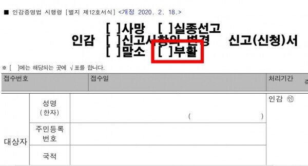

부활

부활
인감부활이잖아
네?? 인간부활이요??
아뇨 부랄이요
빡대가리들존나많네
심각
리트냥 이론으로 볼 때 타인을 욕할 때 자신이 들었을 때 가장 긁히는 컴플렉스로 욕을 한대.
이런 키 182 존잘 알파남 아다폭격기 개붕이같으니라고
비숍님 리저렉션!!!!!
그~~~리워하면
행정적 부활이라 생각하면 납득되는디
진우야 부활해라~~
심정지로 관짝에 들어갔다가 임사체험이나 가사상태로 있다 살아난 사람도 쓸 수 있다.
활! 부!
김태원 : 흐뭇
저건 인감부활이고
무슨 실종했다 돌아오면 부활 신청해야 한다는 말도 가끔 나오는데
실종선고는 사망을 간주한거지 실제로 사망한게 아님
그래서 민법 제 29조에 따라 실종선고의 취소를 구해야 할 일이지
부활신청 어쩌고는 틀린말임
궁금한거 있는데
사망은 주민등록 말소 되잖아.
근데 실종선고는 유지돼? 말소됐다가 사람 찾아버리면 어떡하나 싶어서
바로 말소는 안되고 거주불명 몇갤되면 될걸??
부활특
대체로 한달안에 다시죽음
장례식장에서 가장 하면 안되는 행위
[부활]
'인감'이라고 앞에 버젓이 써 있는데 그건 안읽나?
그런감..
실종신고 이후 사망처리된후, 발견된 사람은 부활신청서 써야함..
할렐루야